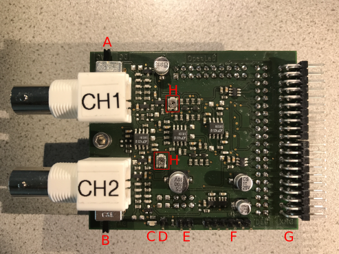
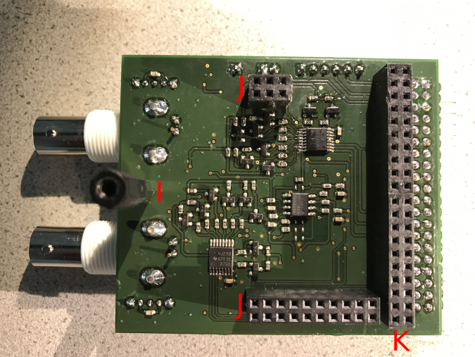
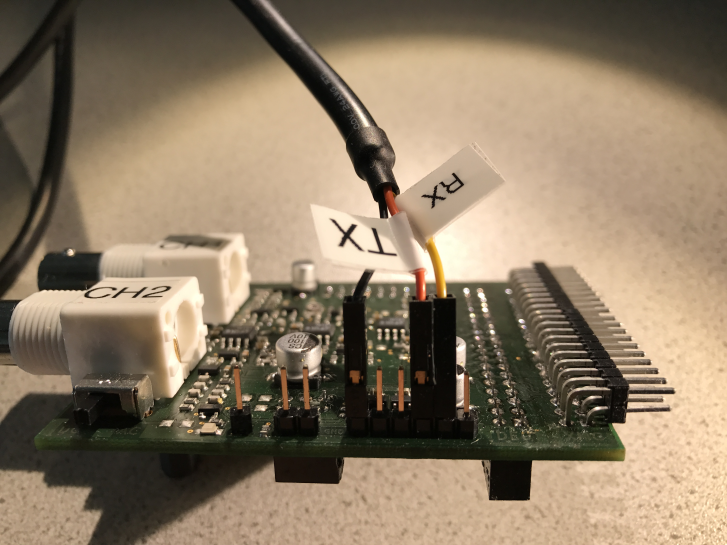

Hardware Description
The image below illustrates an overview of the assembled OpenLab oscilloscope utilizing the FPGA DEO board. Before you start with your measurements, please make sure that all switches are in the down position. Furthermore, connect the PCB only to the male header GPIO1. Connect the serial FTDI cable to the hardware and subsequently to a free USB port. Finally the FPGA can be started by pressing the button SW10 (red button). Now the OpenLab Launcher can be started.

The following images are intended to give an overview of the PCB.
 - A: AC/DC Switches CH1
- B: AC/DC Switches CH2
- C: Power LED
- D: Probe Compensation
- E: GND Connector
- F: Serial Interface Connector (GND | - | - | TX | RX | -)
- G: FPGA DE0 Connector
- H: Offset Correction - Do not adjust this trimmer!
- I: Threaded Standoff
- J: TIVA-C Connectors
- K: XMC4500 Connector
